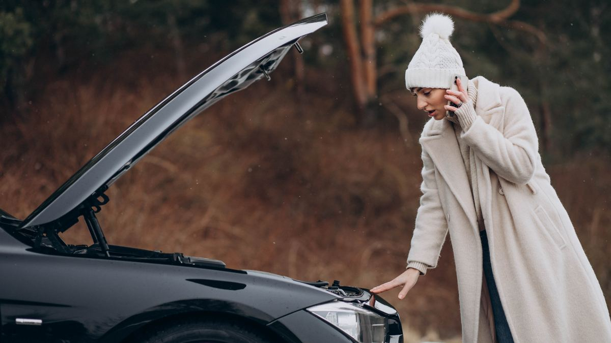

Otwieranie auta · 4 min czytania
Rozładowany akumulator i zamknięte auto – jak dostać się do środka
Pilot nie reaguje, kierunkowskazy nie migają, a drzwi ani drgną? Rozładowany akumulator to częsty powód, dla którego nie możesz otworzyć auta – wyjaśniamy, jak dostać się do środka i co zrobić dalej.

„Rozładowany akumulator, nie mogę otworzyć auta” – to sytuacja szczególnie częsta zimą i po dłuższym postoju, np. po urlopie. Centralny zamek, alarm i system bezkluczykowy potrzebują prądu, więc gdy akumulator jest pusty, pilot przestaje działać, a samochód nie reaguje nawet na dotknięcie klamki. Na szczęście w większości aut producent przewidział na taką okoliczność proste rozwiązanie awaryjne – wystarczy wiedzieć, gdzie go szukać.
Akumulator auta czy bateria w pilocie? Szybki test
Zanim zaczniesz działać, upewnij się, co właściwie zawiodło. Objawy bywają podobne:
- Dioda w pilocie nie świeci, a zapasowy kluczyk otwiera auto – winna jest bateria w pilocie. Jej wymiana to zwykle kilka minut, opisujemy ją w poradniku wymiana baterii w kluczyku.
- Żaden kluczyk nie działa, kierunkowskazy nie mrugają, nic nie klika – najpewniej padł akumulator samochodu.
- Przez szybę widać włączone światła, lampkę sufitową lub ładowarkę w gniazdku – to częste przyczyny rozładowania w ciągu jednej nocy.
- Jest silny mróz, a auto stało kilka dni – słaby akumulator może nie mieć już siły nawet na otwarcie zamków.
Rozładowany akumulator i nie mogę otworzyć auta – co zrobić
Jeśli to akumulator, skorzystaj z mechanicznego, awaryjnego otwierania – czyli z własnego kluczyka, tylko w inny sposób niż zwykle:
- Znajdź metalowy grot w kluczyku. W większości pilotów i kart keyless ukryty jest mechaniczny kluczyk awaryjny. Zwykle wysuwa się go po przesunięciu małego zatrzasku lub naciśnięciu przycisku na obudowie.
- Znajdź zamek w drzwiach kierowcy. W wielu nowszych autach wkładka jest schowana pod zaślepką przy klamce. Instrukcja obsługi pokazuje, jak ją zdjąć bez rysowania lakieru – nie podważaj jej na siłę ostrym narzędziem. Jeśli instrukcja leży w zamkniętym aucie, poszukaj jej wersji elektronicznej – wielu producentów udostępnia ją w internecie.
- Otwórz drzwi kluczykiem. Najczęściej odblokują się tylko drzwi kierowcy. Pozostałe drzwi i bagażnik mogą zostać zamknięte, dopóki auto nie odzyska zasilania.
- Licz się z alarmem. Niektóre alarmy mają własne zasilanie i mogą się włączyć po otwarciu drzwi kluczykiem. Sposób jego wyłączenia opisuje instrukcja – zwykle wystarczy, że auto rozpozna Twój kluczyk.
Zamek, którego nikt nie używał od lat, może być zapieczony lub zamarznięty. Jeśli kluczyk nie chce się obrócić, nie przekręcaj go na siłę – łatwo go złamać. Zimą zajrzyj najpierw do poradnika zamarznięty zamek w aucie.
Gdy padła bateria w kluczyku keyless
Jeśli akumulator auta jest w porządku, a nie działa tylko kluczyk bezkluczykowy, drzwi otworzysz tym samym mechanicznym grotem. Do uruchomienia silnika producenci przewidują zwykle procedurę awaryjną: kluczyk przykłada się w oznaczonym miejscu, np. przy przycisku start lub na kolumnie kierownicy, albo wkłada do specjalnej kieszeni. Dokładny sposób znajdziesz w instrukcji swojego auta. Po powrocie do domu od razu wymień baterię.
Po otwarciu: jak uruchomić samochód
- Otwórz maskę – dźwignia zwalniająca jest zwykle w kabinie, przy nogach kierowcy, i działa mechanicznie, bez prądu.
- Uruchom auto z kabli lub urządzenia rozruchowego zgodnie z instrukcją samochodu. W części aut akumulator jest w bagażniku lub pod podłogą, a pod maską znajdują się specjalne punkty do podłączenia kabli.
- Skorzystaj z assistance, jeśli masz je w polisie lub pakiecie serwisowym.
- Po uruchomieniu pojedź dłuższą trasę lub naładuj akumulator prostownikiem – krótki odcinek nie wystarczy, żeby go podładować.
Co może się „rozkalibrować” po głębokim rozładowaniu
Po całkowitym rozładowaniu akumulatora część aut traci ustawienia. Zwykle trzeba ustawić zegar, czasem ponownie „nauczyć” szyby automatycznego domykania (instrukcja opisuje, jak to zrobić), a w starszych samochodach radio może poprosić o kod – warto wiedzieć, gdzie leży karta z kodem. To normalne objawy i zwykle nie oznaczają usterki.
Jeśli po podładowaniu silnik kręci, ale nie zapala, albo na desce miga kontrolka immobilizera, problem może leżeć gdzie indziej. Więcej w artykule auto kręci, ale nie odpala.
Kiedy wezwać pomoc
Zadzwoń po fachowca, gdy:
- w kluczyku brakuje mechanicznego grota albo kluczyk zaginął,
- wkładka zamka w drzwiach jest uszkodzona, zapieczona lub jej nie ma,
- kluczyki zostały w środku zamkniętego auta,
- spieszysz się, a samodzielne próby zaczynają grozić uszkodzeniem lakieru lub zamka.
Cenę podajemy przez telefon, zanim zaczniemy pracę. Przed otwarciem poprosimy o dowód osobisty i dowód rejestracyjny – jeśli dowód rejestracyjny jest w aucie, pokażesz go zaraz po otwarciu drzwi. Szczegóły na stronie otwieranie samochodów.
Jak nie dopuścić do takiej sytuacji
- Przed zimą sprawdź stan akumulatora – zwłaszcza jeśli ma już kilka lat.
- Przy dłuższym postoju podłącz ładowarkę podtrzymującą albo co jakiś czas wybierz się autem na dłuższą trasę.
- Zanim zamkniesz auto, rzuć okiem na światła, lampki i gniazda USB.
- Wymieniaj baterię w pilocie, gdy zasięg zaczyna słabnąć.
Sprawdź już dziś, jak wysuwa się grot awaryjny z Twojego kluczyka i gdzie w drzwiach kierowcy jest ukryty zamek. Gdy akumulator padnie w mroźny wieczór, nie będziesz szukać instrukcji przy świetle latarki w telefonie.
Stoisz przy zamkniętym aucie z rozładowanym akumulatorem w Kielcach lub okolicy? Działamy 24 godziny na dobę, 7 dni w tygodniu, i dojeżdżamy do klienta. Zadzwoń: 668 292 270.